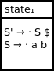
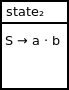
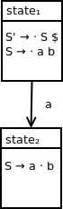
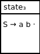
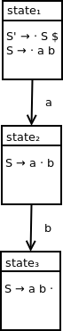

Handling end of string
After the reduce action, from state1, we want to process the end of string similar to in our last example.
Extending our DFA, we end up with the a final diagram of:
![DFA containing five states. State 1 contains the following productions: S prime produces dot S $, S produces dot a b. State 2 contains the following production: S produces S a dot b. State 1 transitions to state 2 on terminal symbol a. State 3 contains the following production: S produces S a b dot. State 2 transitions to state 3 on terminal symbol b. State 4 contains the following production: S prime produces S dot $. State 1 transitions to state 4 on nonterminal symbol S. State 5 contains the following production: S prime produces S $ dot. State 4 transitions to state 5 on end of string symbol $. State 5 is an accepting state.](assets/multiterminaldfa5parsestates.png)
We've seen the process for constructing an LR(0) DFA for a grammar that derives a single-terminal string.
In this section, we will expand this process to handle a grammar that derives a multi-terminal string.
The grammar we will be analyzing is specified by the following grammar:
S → ab
This grammar has the following augmented grammar:
S' → S $
S → ab
This grammar has the following LR(0) parse table:
| a | b | $ | S | S' | |
| state1 | shift2 | goto4 | |||
| state2 | shift3 | ||||
| state3 | reduce2 | reduce2 | reduce2 | ||
| state4 | accept |
Parsing input string ab:
| Input queue | Parse stack | Action |
|---|---|---|
| ab | 1 | Apply action of shift2 which corresponds to state1 and a in our parse table |
| b | 1 a 2 | Apply action of shift3 which corresponds to state2 and b in our parse table |
| 1 a 2 b 3 | Apply action of reduce2 which corresponds to state3 and $ in our parse table | |
| 1 S | Apply action of goto4 which corresponds to state1 and S in our parse table | |
| 1 S 4 | Accept, since this action corresponds to state4 and $ in our parse table |
As before, we will construct our initial parse state using a closure starting with our initial qualified production rule.
Our initial set of qualified productions is:
{S' → · S $}
Calculating the closure set, we end up with:
{S → · a b}
We can't move any farther in our closure calculation since we've hit a dead end with the terminal a. Advancing would require the processing of the input symbol a.
We can visualize our initial parse state as:
Observe the following sequence of parse stack states encountered in the parsing example above:
Here, we need to first shift a and then b onto the parse stack before reducing to nontermial symbol S.
To handle the processing of terminal a, we first start with the qualified production:
S → · a b
and shift the dot past the symbol a since we are processing it via a shift action. We end up with the following qualified production:
S → a · b
In constructing our second state, we start with this set of qualified productions:
{S → a · b}
Since the · symbol appears before a terminal symbol, we can't expand this closure. As a result, the second parse state can be visualized as:
Finally, we connect state1 and state2 with the appropriate transition as follows:
After terminal a is shifted onto our parse stack, we continue our parsing process by shifting b onto the parse stack as follows:
Before this shift action, we are in a state corresponding to qualified production S → a · b.
After this shift action, we have the qualified production S → a b ·
As we did for our last state, we can start our closure setup by adding our single qualified production rule to our closure set as follows:
{S → a b ·}
Since the · does not appears before a nonterminal symbol, we can't expand this closure. As a result, the third parse state can be visualized as:
Since we shift from state2 to state3 when pushing input symbol b onto the parse stack, we extend our DFA with a subsequent transition to state3:
Observe the following sequence of parse stack states:
From state3, when we reduce terminals a and b to nonterminal S, we remove these two terminals plus their two corresponding states from the parse stack before pushing our nonterminal S onto it.
After the reduce action, from state1, we want to process the end of string similar to in our last example.
Extending our DFA, we end up with the a final diagram of:
We've seen the LR(0) DFA construction process for a grammar that derives a multi-terminal string.
Next, we will illustrate the DFA construction process for a grammar with a production chain.
GitHub Repository: https://github.com/bprollinson/ripal
Copyright © 2017 Brendan Rollinson-Lorimer